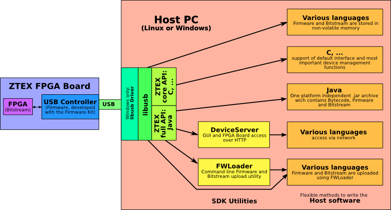

| Class | Description |
|---|---|
| ConfigData |
This class represents the configuration data space of ZTEX FPGA Boards that support it.
|
| EzUsb |
Provides methods for uploading firmware to Cypress EZ-USB devices.
|
| Fx3Errors |
FX3 runtime error strings
|
| ImgFile |
A class representing a firmware image.
|
| JInputStream |
Creates an input stream from a regular file or a system resource file (i.e. a file from the current jar file).
|
| Ztex1 |
This class implements the interface-independent part of the communication protocol for the interaction with the ZTEX firmware.
|
| Ztex1v1 |
This class implements the communication protocol of the interface version 1 for the interaction with the ZTEX firmware.
|
| ZtexContext |
This class manages an USB context.
|
| ZtexDevice1 |
A class representing an EZ-USB device that supports the ZTEX descriptor 1 or an unconfigured EZ-USB device.
|
| ZtexEventHandler |
This class defines an event handler thread which can be used in asynchronous mode.
|
| ZtexImgFile1 |
Represents a firmware image with ZTEX descriptor 1.
|
| ZtexScanBus1 |
A class for scanning the USB for EZ-USB devices.
|
| ZtexUsbReader |
A helper class to implement asynchronous bulk and interrupt read transfers.
|
| ZtexUsbWriter |
A helper class to implement asynchronous bulk and interrupt write transfers.
|
| Exception | Description |
|---|---|
| AlreadyConfiguredException |
Thrown if the FPGA is already configured.
|
| BitstreamReadException |
Signals that an error occurred while attempting to read a bitstream.
|
| BitstreamUploadException |
Signals that an error occurred while attempting to upload the bitstream.
|
| CapabilityException |
Thrown is a required capability is not available.
|
| DeviceLostException |
Thrown if a device went lost after renumeration.
|
| DeviceNotSupportedException |
Thrown if a device is not supported, i.e. has the wrong USB ID's.
|
| FirmwareUploadException |
Signals that an error occured while attempting to upload the firmware.
|
| ImgFileDamagedException |
Signals that a firmware image is corrupt.
|
| ImgParseException |
Signals that an error occurred while attempting to decode the firmware file.
|
| IncompatibleFirmwareException |
Thrown while attempting to overwrite an existing firmware with an incompatible one.
|
| InvalidFirmwareException |
Thrown if a device runs with no or the wrong firmware, i.e. if the ZTEX descriptor is not found or damaged.
|
| UsbException |
Signals an USB error.
|
This API implements access to all ZTEX FPGA Board specific functions from host side. It uses usb4java, a Java wrapper for libusb 1.0.
ZtexDevice1.
The communication protocol defines how the functions provided by the firmware (see main features above)
can be accessed. Currently there is only one protocol implemented, the so called interface 1.
A description of the interface is given in Ztex1v1.
The most important classes for the interaction with the EZ-USB device / firmware are
ZtexDevice1 |
Represents an EZ-USB device that supports ZTEX descriptor 1. These devices can be found using ZtexScanBus1. |
Ztex1 |
Implementation of interface-independent part of the communication protocol, e.g. uploading the firmware to the EZ-USB and renumeration management. |
Ztex1v1 |
Implementation of the Interface 1, i.e. the interface dependent part of the communication protocol. |

Java host software built with the SDK usually consists in a single jar archive which contains
On Linux this jar archive has no additional software requirements. The usb4java/libusb-1.0 library communicates directly with the EZ-USB device using kernel routines.
On Windows a libusb-1.0 driver must be installed and assigned to the device, see the Tutorial on the Wiki. The usb4java library communicates with the EZ-USB device using that driver.